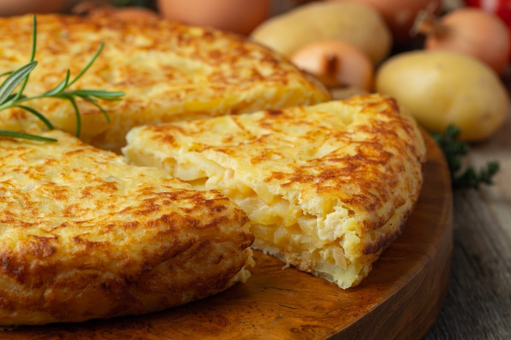

Pelar y cortar las papas en rodajas finitas, tambien cortar la cebolal en laminas
Pone el aceite en una sarten y frita las papas a fuego medio-bajo durante 12-15 minutos, hasta que esten blanditas
Batir los huevos con sal, mezaclaros con las papas y volvalo en el sarten
Cocina unos 4-5 minutos por lado, hasta que este firme y bien cocida por dentro. Para darla vuelta usa un plato